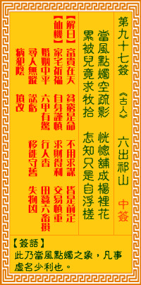

观音灵签第九十七签 【六出祁山】 |
 | |||
园林月色摇疏影 恍若铺成满地琼 几度童儿来收拾 岂知收拾总成空 |
||||
| 【吉凶】 | 下下签 | 【宫位】 | 亥宫 | |
| 【签语】 | 此卦当风点烛之象，凡事虚名少利也。 | |||
| 【解曰】 | 富贵在天 贫穷是命 不用求谋 皆是前定 | |||
| 【仙机】 | 此签家宅祈保，自身谨慎，求财得利，交易慎重，婚姻中平，六甲有惊，行人杳，田蚕六畜损，寻人无踪，讼亏，移徙守旧，失物凶，病 犯阴，坟改。 | |||
| 【详解】 | 园林中的树枝因风吹拂摇摆，透过月光的照射，彷佛在地上铺满了整片晶莹的美玉;几次想要叫童子来打扫干净，但地上的影子哪里能够收拾得起来呢? 富贵在天，贫穷由命，不用机谋，皆有分定。此签虚名薄利之象，凡事不宜贪求。 本签者。虚名薄利之象。凡百事不得贪求者也。诗曰：恍若铺成满地琼。岂知收拾总无成。如君之行动不紧速。将闹得无法收拾。谣言四播。到头来将陷入罗网中 自拔不得。如此苦境只有几人知。易言之。君目下之运也。该知富贵在天。贫穷由命不用机谋。皆有分定者耶。 此签有”欲念无穷”之意。奉劝当事人，凡事不要过贪。对于身边的物事，取之平衡、够用就好，不应得寸进尺，任由欲望无止尽的扩大。无论是贪多、贪快、贪 急都不好，不但对事情本身毫无帮助，甚至反而会导致反效果。凡事应能谨慎节制，时刻检视、约束自己的欲望;知足才能常乐。 | |||
| 【典故】 | 诸葛亮回到成都后，三年按兵不动。这年建兴十二年春二月，亮又对后主（刘禅）说要第六次出祈山，统帅全军攻打魏国，天文官劝他不 可出兵，恐有不利，他坚持要出，说：“鞠躬尽瘁，死而后已”。这回出师果然不利，诸葛亮病死五丈原。浮槎：传说中来往于海上和天河之间的木筏。《三国演义》 | |||